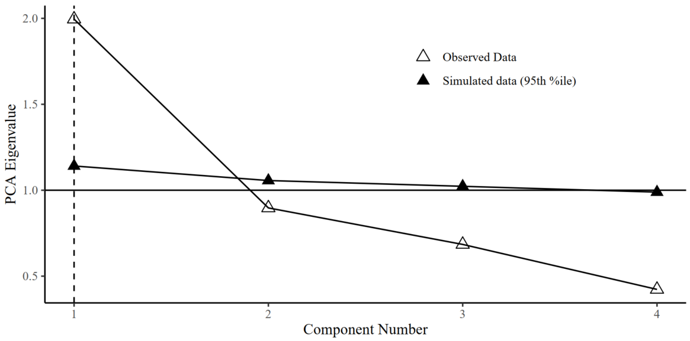

Parallel analysis
Anna Elisabeth Furtjes
King’s College London
Here we present a version of parallel analysis for PCA performed in genomic correlation matrices. Parallel analysis tests whether data-derived genetic PCs explain more variance than expected by chance, that is, whether they explained more than 95% of their corresponding PCs generated under a simulated null correlation matrix. This version of parallel analysis generates null distributions of eigenvalues by simulating null correlation matrices sampled from a diagonal population correlation matrix, where the multivariate sampling distribution is specified to take the form of the sampling distribution of the standardised empirical genetic correlation matrix (the VSTAND matrix, as estimated using GenomicSEM). This sampling correlation matrix serves as an index of the precision of and dependencies among genetic correlations when generating the random null models. Here, we specify 1,000 replications to simulate the null correlation matrices and use a 95% threshold for distinguishing true eigenvalues from noise. The analysis script was written by Javier de la Fuente, and is made publicly available here.
# source Javiers function
# use try() to ignore the error: by loading it, R will attempt to execute the function but the input has not yet been specified by the user
setwd(paste0(substring(getwd(), first = 1, last = 18),"Documents/GitHub/genomicPCA/data"))
try(source("Parallel_Anallysis_paLDSC_JF.R"))
# load the LDSC results
# make sure that, when calculating ldsc(), specification stand = T was included
load("risk_taking_stand.RData")
# run parallel analysis function
paLDSC(S_Stand = LDSCoutput_risk_taking$S_Stand, V_Stand = LDSCoutput_risk_taking$V_Stand, r = 1000, p = .95, diag = F, fa = F, fm = "minres", save.pdf = T)\[\\[0.01in]\]
Running the function will create a PDF depicting the Scree Plots and it will suggest how many components to extract for the underlying empirical data. In this example, Parallel Analysis suggests extracting 1 component to represent general dimensions of genetic sharing underlying four risky behaviours GWAS.
\[\\[0.01in]\]


By Anna Elisabeth Fürtjes
anna.furtjes@kcl.ac.uk